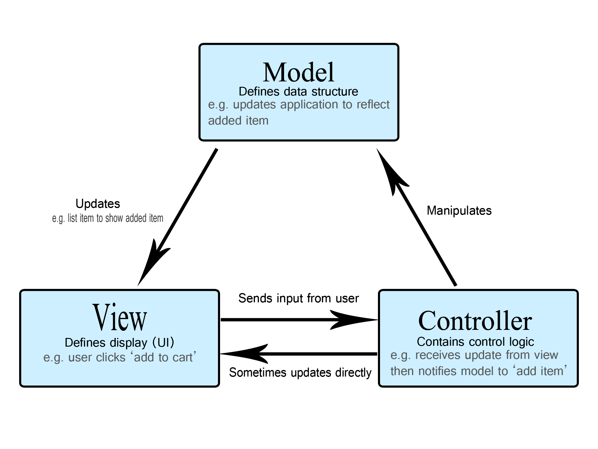
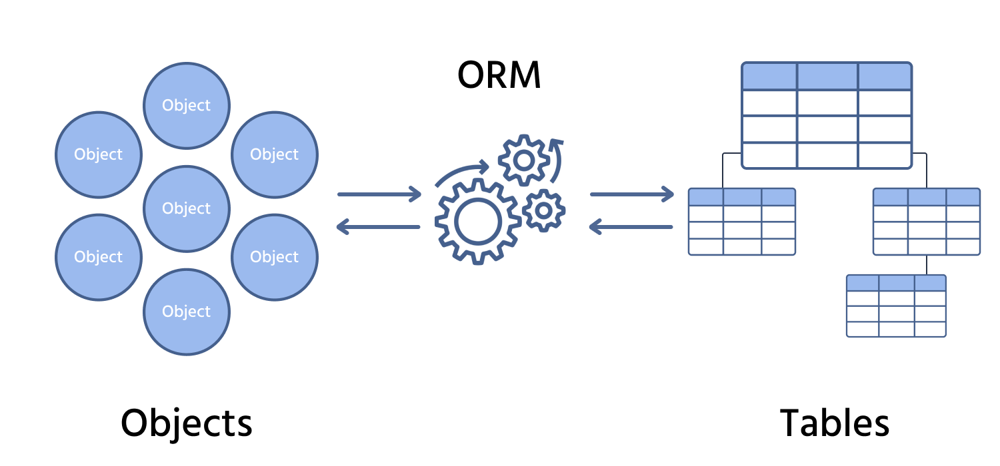

Introducción
Hasta ahora, hemos aprendido a construir aplicaciones escribiendo código PHP desde cero, gestionando manualmente la inclusión de ficheros, las conexiones a la base de datos y el flujo de la aplicación. Este enfoque, conocido como "PHP Vainilla", es fundamental para entender cómo funciona el lenguaje. Sin embargo, a medida que las aplicaciones crecen, este método presenta desafíos significativos: el código puede volverse desorganizado ("código espagueti"), las tareas comunes se vuelven repetitivas y garantizar la seguridad se convierte en una tarea compleja y propensa a errores.
Para solucionar estos problemas y profesionalizar el proceso de desarrollo, la comunidad de PHP, al igual que la de otros lenguajes, ha creado los frameworks. Un framework es un esqueleto o andamiaje de software que proporciona una estructura estándar y un conjunto de herramientas y librerías para construir aplicaciones. En lugar de empezar con una carpeta vacía, partimos de una base sólida que ya resuelve los problemas más comunes y nos guía para que sigamos las mejores prácticas de la industria.
La mayoría de los frameworks de PHP modernos se basan en la arquitectura Modelo-Vista-Controlador (MVC), que separa la lógica de negocio (Modelo) de la presentación (Vista) y el control del flujo (Controlador). Además, ofrecen componentes ya construidos para tareas como el enrutamiento de URLs, el acceso a bases de datos (mediante ORMs), la validación de formularios, la autenticación de usuarios y la protección contra vulnerabilidades comunes.
Aunque existen varias opciones excelentes como Symfony o CodeIgniter, en las siguientes secciones nos centraremos en el framework más popular y con mayor crecimiento en el ecosistema PHP actual: Laravel. Exploraremos su filosofía, sus componentes principales y cómo nos permite construir aplicaciones complejas de forma rápida, elegante y segura.
La Arquitectura MVC
A medida que una aplicación web crece, el mayor desafío es mantener el código organizado y mantenible. En un proyecto sin estructura, es muy común acabar con ficheros que mezclan lógica de negocio, consultas a la base de datos y código HTML. Este fenómeno, conocido como "código espagueti", hace que la aplicación sea frágil, difícil de depurar y casi imposible de escalar.
Para resolver este problema, la industria del software adoptó un patrón de diseño arquitectónico llamado MVC (Modelo-Vista-Controlador). MVC no es un lenguaje ni un framework, sino una filosofía para organizar el código que se basa en un principio fundamental: la Separación de Intereses. La idea es dividir la aplicación en tres componentes principales, cada uno con una responsabilidad única y bien definida.

El Modelo es el cerebro de la aplicación, la capa donde reside toda la lógica de negocio y la gestión de los datos. Sus responsabilidades incluyen definir la estructura de la información (por ejemplo, un modelo Articulo con sus propiedades), implementar las reglas de negocio (como una función que determine si un usuario puede publicar) y ser el único componente que interactúa directamente con la base de datos, a menudo a través de un ORM. Es fundamental entender que el Modelo es completamente agnóstico a la presentación; no sabe ni le importa cómo se mostrarán los datos en el HTML.
En el extremo opuesto se encuentra la Vista, que constituye la cara visible de la aplicación, es decir, la capa de presentación que ve el usuario. Generalmente es un fichero de plantilla HTML que recibe datos y los muestra. La Vista debe ser "tonta", su única responsabilidad es presentar la información que le llega, utilizando bucles o condicionales simples si es necesario para el renderizado, pero sin contener lógica de negocio ni realizar consultas a la base de datos.
El nexo de unión entre ambos es el Controlador, que actúa como un director de orquesta. Cuando una petición de un usuario llega, un sistema de enrutamiento la dirige a un método específico de un Controlador. Este, a su vez, le pide al Modelo los datos que necesita, selecciona la Vista apropiada para la respuesta y le pasa los datos que ha recibido del Modelo. Finalmente, la Vista se renderiza como un documento HTML completo y el Controlador lo envía de vuelta al navegador como la respuesta final a la petición.
La adopción de esta arquitectura se traduce en beneficios directos y significativos. La estricta separación de intereses resulta en una mejor organización del código y una mantenibilidad superior, ya que un cambio en la interfaz (la Vista) no requiere modificar la lógica de negocio (el Modelo). Este desacoplamiento también fomenta la reutilización de código, permitiendo que un mismo Modelo sirva datos a múltiples Controladores y Vistas. Finalmente, esta clara división de tareas facilita el trabajo en paralelo, posibilitando que los equipos de frontend y backend puedan desarrollar sus respectivas capas de forma concurrente.
El Traductor Mágico: ¿Qué es un ORM?
Cuando trabajamos con la arquitectura MVC, dijimos que el Modelo es el responsable de interactuar con la base de datos. Históricamente, esto significaba escribir sentencias SQL en nuestro código PHP, ejecutar las consultas y mapear manualmente los resultados a objetos o arrays. Este proceso es tedioso, repetitivo y propenso a errores.

Para resolver este problema, los frameworks modernos utilizan una técnica llamada ORM (Object-Relational Mapping o Mapeo Objeto-Relacional). Un ORM es una capa de abstracción, un "traductor" mágico que se sitúa entre nuestra aplicación (que piensa en Objetos) y la base de datos (que piensa en Tablas Relacionales).
La Brecha entre Objetos y Tablas
En nuestro código PHP, nos gusta trabajar con objetos: tenemos una clase Usuario, creamos un objeto $usuario y accedemos a sus propiedades como $usuario->nombre. En la base de datos, sin embargo, esa información está guardada en una tabla usuarios con filas y columnas. Sin un ORM, para obtener los datos de un usuario y convertirlos en un objeto, tendríamos que:
- Escribir una consulta
SELECT * FROM usuarios WHERE id = 1. - Ejecutar la consulta con PDO.
- Obtener el resultado como un array asociativo.
- Crear un nuevo objeto
new Usuario()y asignar manualmente cada valor del array a cada propiedad del objeto.
Para guardar los cambios, tendríamos que hacer el proceso inverso: tomar las propiedades del objeto y construir una sentencia UPDATE.
Un ORM automatiza por completo el proceso de traducción entre la base de datos y la aplicación al establecer un mapeo directo y coherente. Por ejemplo, una tabla de la base de datos llamada usuarios se corresponde directamente con una clase Usuario en nuestro código. Gracias a esta conexión, el ORM se encarga de que cada fila de esa tabla sea tratada como un objeto individual (una instancia) de la clase Usuario, y que cada columna de la tabla se corresponda con una propiedad de dicho objeto.
Este mapeo es lo que nos permite abandonar las sentencias SQL manuales y, en su lugar, interactuar con nuestros datos utilizando una sintaxis de objetos fluida y expresiva. El desarrollador simplemente manipula los objetos y sus propiedades, y el ORM se encarga de generar y ejecutar las consultas SQL necesarias por debajo, haciendo que el acceso a los datos sea una parte natural e integrada del lenguaje de programación.
Los frameworks que hemos mencionado tienen sus propios ORMs o se integran con los más populares. Laravel usa Eloquent, que es conocido por su sintaxis simple y elegante. Symfony se integra a la perfección con Doctrine, un ORM muy potente y robusto de nivel empresarial.
Ventajas de Usar un ORM
El principal beneficio de adoptar un ORM se manifiesta en un aumento drástico de la productividad, ya que reduce la cantidad de código repetitivo y manual necesario para las operaciones CRUD. Más allá de la velocidad de desarrollo, un ORM proporciona una valiosa abstracción de la base de datos, lo que significa que nuestro código se vuelve agnóstico al sistema de base de datos subyacente. Esto nos permite, por ejemplo, cambiar de MySQL a PostgreSQL con modificaciones mínimas en la configuración, sin necesidad de reescribir la lógica de la aplicación.
Esta capa de abstracción también introduce mejoras de seguridad de forma automática, ya que los ORMs modernos utilizan sentencias preparadas por defecto, eliminando prácticamente el riesgo de inyección SQL. Finalmente, todos estos factores convergen en un código más legible y mantenible, donde la lógica de negocio se expresa de forma limpia en el paradigma de objetos, en lugar de estar mezclada con cadenas de texto de sentencias SQL.
Desventajas y Consideraciones de un ORM
Sin embargo, la comodidad de un ORM introduce una nueva capa de abstracción que conlleva sus propias desventajas, empezando por su curva de aprendizaje y complejidad. Aunque las operaciones CRUD básicas se simplifican, realizar consultas complejas con uniones (JOINs) o agregaciones puede requerir un conocimiento profundo de la herramienta, y en ocasiones, el esfuerzo para forzar al ORM a generar un SQL óptimo es mayor que el de escribir la consulta directamente.
Esta misma capa de abstracción puede generar una sobrecarga de rendimiento, ya que el SQL generado automáticamente puede no ser tan eficiente como una consulta escrita a mano por un experto. Si no se utilizan con cuidado, los ORMs pueden incluso provocar problemas graves como el famoso "problema N+1", donde una sola operación en el código desencadena una cascada de consultas ineficientes a la base de datos.
Quizás uno de los riesgos más sutiles a largo plazo es la pérdida de cercanía con la base de datos. Al depender de la "magia" del ORM, los desarrolladores pueden perder fluidez en el lenguaje SQL, lo que dificulta la depuración de consultas lentas y la optimización a bajo nivel. Finalmente, aunque agilizan el desarrollo una vez en marcha, la configuración inicial de un ORM, con el mapeo de todas las entidades y la definición de sus relaciones, puede añadir una notable capa de complejidad y código repetitivo al inicio de un proyecto.
Composer: El Gestor de Dependencias de PHP
En el apartado sobre herramientas, mencionamos los gestores de paquetes como una pieza esencial del desarrollo moderno. Para PHP, la herramienta estándar y fundamental que cumple esta función es Composer. Entender qué es y cómo funciona es un requisito indispensable para cualquier desarrollador de PHP actual.
Antes de la llegada de Composer, si un desarrollador quería usar una librería externa (por ejemplo, una para enviar correos electrónicos), el proceso era manual y caótico. Había que buscar la librería, descargar un fichero ZIP, descomprimirlo en una carpeta del proyecto (normalmente libs/ o includes/) y luego gestionar manualmente las sentencias require para cargar sus ficheros.
Este enfoque manual para la gestión de librerías presentaba una serie de problemas graves que hacían que el desarrollo en PHP a gran escala fuera frágil y poco fiable. Las actualizaciones eran un proceso completamente manual y propenso a errores, que implicaba reemplazar ficheros con el riesgo de introducir cambios incompatibles sin un método sencillo para revertirlos.
El problema se agravaba con las dependencias transitivas; si la librería que habíamos descargado necesitaba, a su vez, otra librería para funcionar, el desarrollador era el único responsable de descubrir, encontrar y gestionar también esa segunda dependencia, un proceso que podía volverse exponencialmente complejo.
Finalmente, este método generaba una falta de consistencia crítica entre los entornos, haciendo muy difícil asegurar que todos los miembros del equipo y el servidor de producción utilizaran exactamente las mismas versiones de cada componente, lo que a menudo resultaba en errores difíciles de reproducir y solucionar.
La Solución: Composer al Rescate
Composer es un gestor de dependencias para PHP. Esto significa que su trabajo es gestionar las librerías de las que depende nuestro proyecto. Es importante destacar que gestiona las dependencias por proyecto, no a nivel global del sistema.
Su funcionamiento se basa en tres componentes clave:
El fichero composer.json
Este es el fichero de manifiesto de nuestro proyecto. En él, nosotros declaramos qué librerías necesita nuestro proyecto y qué versiones son compatibles (por ejemplo, "necesito la librería monolog/monolog en cualquier versión a partir de la 2.0").
{
"name": "mi-proyecto/aplicacion-web",
"description": "Un proyecto de ejemplo para demostrar el uso de Composer.",
"type": "project",
"license": "MIT",
"authors": [
{
"name": "Tu Nombre",
"email": "tu@email.com"
}
],
"require": {
"php": "^8.0",
"monolog/monolog": "^2.3",
"vlucas/phpdotenv": "^5.4"
},
"require-dev": {
"phpunit/phpunit": "^9.5"
},
"autoload": {
"psr-4": {
"App\\": "src/"
}
}
}
Un fichero composer.json es el corazón de un proyecto PHP moderno, actuando como un manifiesto que define tanto su identidad como sus dependencias. Las claves iniciales, como name, description y type, sirven como metadatos básicos que identifican el paquete, siguiendo el formato estándar de vendedor/nombre-del-paquete.
La sección más importante es, sin duda, la clave require, donde se declaran las dependencias de producción, es decir, las librerías externas que la aplicación necesita para funcionar. Dentro de este objeto, cada entrada especifica el nombre del paquete y una restricción de versión. Por ejemplo, "php": "^8.0" indica que el proyecto requiere como mínimo la versión 8.0 de PHP, mientras que "monolog/monolog": "^2.3" utiliza el símbolo caret (^) para permitir la instalación de cualquier versión estable desde la 2.3 hasta la siguiente versión mayor (sin incluir la 3.0), garantizando así la retrocompatibilidad.
De forma similar, la sección require-dev lista las dependencias necesarias únicamente para el entorno de desarrollo, como frameworks de testing (p. ej., PHPUnit). Estas herramientas no se instalan en un entorno de producción si se utiliza la opción --no-dev, manteniendo la aplicación final más ligera. Finalmente, la sección autoload es fundamental para la organización del código propio del proyecto. La configuración psr-4 establece un mapa entre un namespace (como App\\) y un directorio (como src/), permitiendo que Composer cargue automáticamente las clases del proyecto sin necesidad de sentencias require_once manuales.
Packagist
Es el repositorio principal de paquetes de Composer. Es una inmensa biblioteca online (packagist.org) donde Composer busca las librerías que hemos declarado en composer.json.
El fichero composer.lock
Cuando definimos nuestras dependencias en el fichero composer.json, a menudo utilizamos rangos de versiones flexibles, como ^2.3, que significa "cualquier versión desde la 2.3 hasta la 2.9.9, pero no la 3.0". Esto presenta un problema potencial de consistencia:
- Un desarrollador que instala el proyecto hoy podría obtener la versión
2.4. - Otro desarrollador que lo instale en un mes podría obtener la
2.5, que acaba de ser lanzada. - El servidor de producción podría tener una tercera versión.
Estas pequeñas diferencias pueden introducir bugs difíciles de rastrear, rompiendo el principio de tener entornos de desarrollo idénticos y reproducibles.
Para resolver este problema, Composer utiliza un segundo fichero llamado composer.lock. Este fichero no se edita manualmente, es generado y gestionado por Composer.
El fichero composer.lock actúa como una "fotografía" o un registro exacto de todas las dependencias y sus versiones específicas que se instalaron en un momento dado. No dice "instala una versión compatible con la 2.3", sino que dice "instala exactamente la versión 2.4.1".
La existencia del composer.lock cambia por completo el comportamiento de los comandos de Composer. Es crucial entender la diferencia:
-
composer install: Este es el comando que usarás el 99% del tiempo (al clonar un proyecto, al desplegar en producción, etc.).- Si
composer.lockexiste, este comando ignora por completo lo que dicecomposer.json. Lee el fichero.locke instala las versiones exactas que están registradas en él. Esto garantiza que todos los miembros del equipo y el servidor de producción tengan un entorno idéntico. - Si
composer.lockno existe, entonces (y solo entonces) Composer leerácomposer.json, calculará las dependencias, instalará las últimas versiones disponibles que cumplan los requisitos y, finalmente, creará el ficherocomposer.locka partir de lo que ha instalado.
- Si
-
composer update: Este comando se usa de forma deliberada cuando quieres actualizar tus dependencias.- Ignora el
composer.lockexistente. - Lee
composer.json, busca las últimas versiones permitidas por tus rangos de versiones. - Instala las nuevas versiones.
- Sobrescribe el fichero
composer.lockcon las nuevas versiones instaladas.
- Ignora el
Para asegurar la consistencia de una aplicación, el fichero composer.lock siempre debe ser incluido en el sistema de control de versiones (Git). De esta forma, cuando otro desarrollador clone el proyecto y ejecute composer install, se asegurará de estar trabajando con el mismo código base y las mismas dependencias que el resto del equipo.
El Flujo de Trabajo y la Magia del Autoloading
El uso de Composer es sencillo. Desde la terminal, en la raíz de nuestro proyecto, usamos comandos como:
composer require monolog/monolog: Este comando añade una nueva dependencia. Automáticamente modifica elcomposer.json, busca el paquete en Packagist, lo descarga y actualiza elcomposer.lock.composer install: Se usa al clonar un proyecto existente que ya tiene uncomposer.lock. Lee este fichero e instala las versiones exactas de las dependencias.composer update: Actualiza las dependencias a las últimas versiones permitidas porcomposer.jsony regenera elcomposer.lock.
Cuando Composer instala las librerías, las descarga en una carpeta llamada vendor/. Dentro de esta carpeta, genera un fichero "mágico": vendor/autoload.php.
Al incluir este único fichero al principio de nuestro script principal (p. ej., index.php) con la línea:
obtenemos acceso a todas las clases de todas las librerías instaladas sin necesidad de escribir ni un solo include o require más. Este mecanismo, conocido como autoloading, es el que permite que el ecosistema de PHP moderno sea tan potente y modular. Composer no es solo una herramienta, es la base sobre la que se construyen todos los frameworks y aplicaciones de PHP actuales.
Instalación de composer
Composer es una herramienta que se gestiona desde la línea de comandos (terminal). El proceso de instalación es sencillo, aunque varía ligeramente dependiendo de tu sistema operativo. La fuente oficial y más segura para las instrucciones es siempre la página web de Composer: getcomposer.org.
Instalación en Windows
Para Windows, el proceso es el más simple, ya que existe un instalador oficial.
- Descargar el Instalador: Ve a la página de descargas de Composer (getcomposer.org/download/) y busca el enlace al instalador de Windows, que será un fichero llamado
Composer-Setup.exe. - Ejecutar el Instalador: Ejecuta el fichero
.exeque has descargado. El instalador te guiará.- Un paso importante es que te pedirá que localices el ejecutable de PHP (
php.exe). Si usas un entorno como XAMPP, normalmente se encuentra enC:\xampp\php\php.exe.
- Un paso importante es que te pedirá que localices el ejecutable de PHP (
- Finalizar: El instalador se encargará de descargar Composer y, lo más importante, de añadirlo al
PATHde tu sistema. Esto permite que puedas llamar al comandocomposerdesde cualquier carpeta en tu terminal.
Instalación en Linux y macOS
En sistemas basados en Unix, la instalación se realiza directamente desde la terminal ejecutando unos pocos comandos que proporciona la página oficial.
- Descargar el Instalador: La página de descargas de Composer te dará un comando para descargar el instalador (
composer-setup.php) de forma segura usando PHP. - Ejecutar el Instalador: Una vez descargado, ejecutas el script con PHP. Esto descargará el fichero
composer.phar. -
Limpiar: Ya puedes borrar el fichero de instalación.
Ahora tendrás un fichero llamadocomposer.pharen tu directorio actual. Un.phares un "Archivo PHP", un paquete ejecutable. -
Hacerlo Global (Paso Crucial): Para poder escribir
Este comando muevecomposeren lugar dephp composer.phar, debes mover este fichero a un directorio que esté en elPATHde tu sistema y renombrarlo.composer.phara/usr/local/biny lo renombra acomposer, haciéndolo un comando global. Puede que necesites privilegios de administrador (sudo).
Verificación
Para comprobar que la instalación se ha realizado correctamente en cualquier sistema operativo, abre una nueva ventana de la terminal y ejecuta:
Si todo ha ido bien, verás la versión de Composer que se ha instalado. Es importante que sea una nueva terminal para que reconozga los cambios en el PATH del sistema.